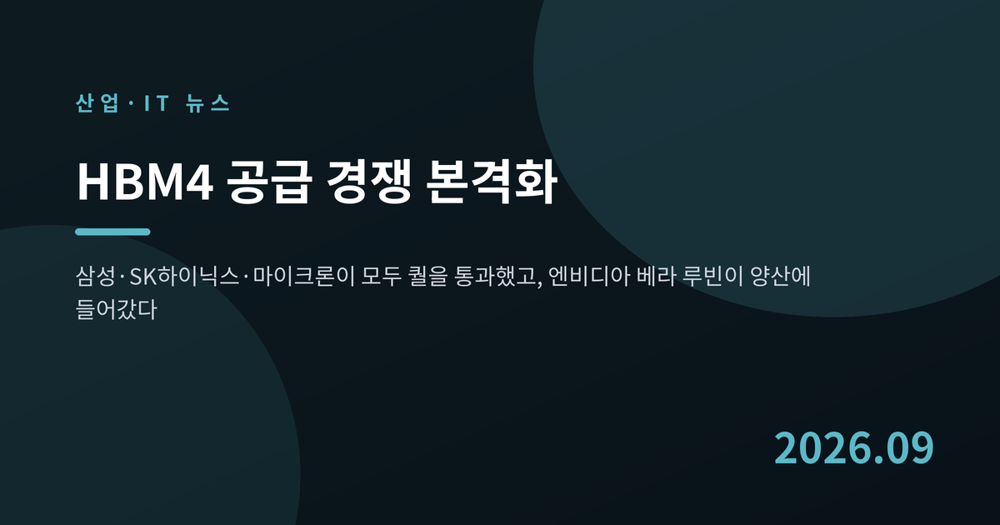
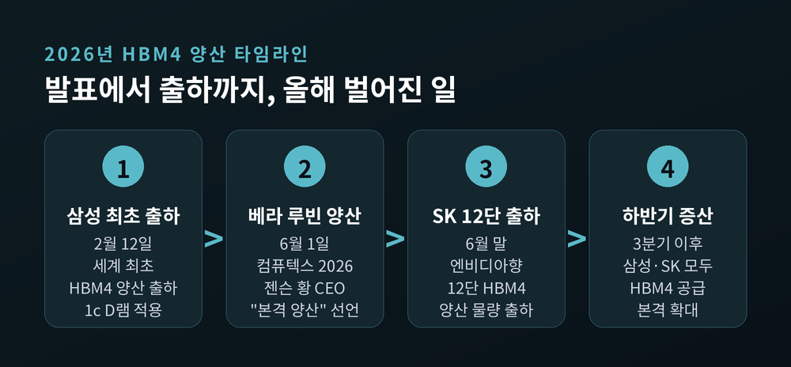
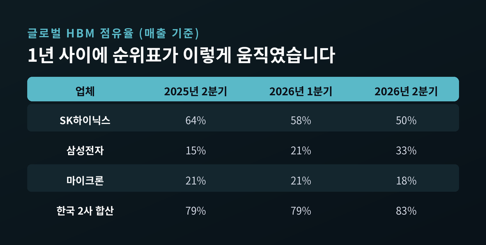
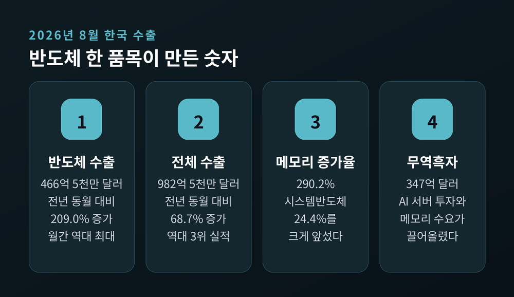
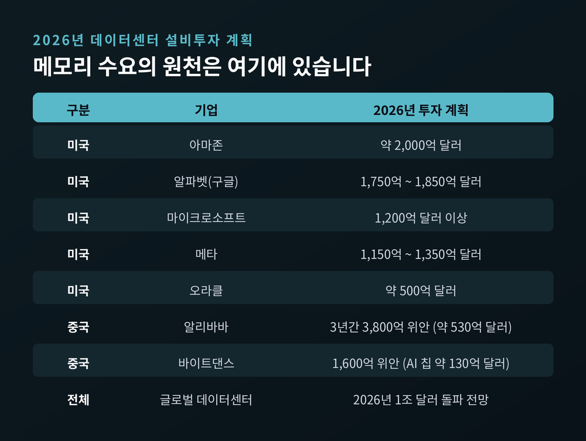
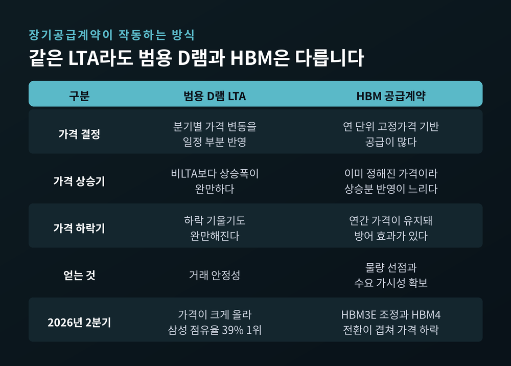
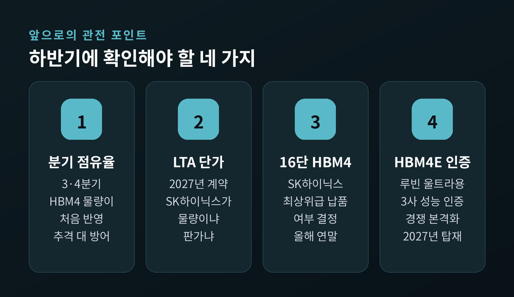

HBM4 공급 경쟁 본격화, 엔비디아 베라 루빈이 메모리 판도를 바꾼다

이번 글에서는 HBM4를 둘러싼 공급 경쟁이 지금 어디까지 왔는지 정리해 보겠습니다. 엔비디아의 차세대 플랫폼 '베라 루빈'이 양산에 들어가면서, 메모리 업계의 순위표도 함께 흔들리고 있습니다.
먼저 세 줄로 요약하겠습니다. 첫째, 삼성전자·SK하이닉스·마이크론 세 곳 모두 엔비디아의 HBM4 품질 승인을 통과했습니다. 둘째, 2026년 2분기 HBM 시장에서 SK하이닉스 점유율은 50%로 내려왔고 삼성전자는 33%까지 올라왔습니다. 셋째, 그럼에도 한국 두 회사의 합산 점유율은 83%로, 세계 AI 서버의 메모리는 여전히 한국이 쥐고 있습니다.
숫자와 날짜는 모두 공개된 자료와 보도에서 확인한 것만 적었습니다. 확정되지 않은 협상 내용은 협상 중이라고 밝히겠습니다.
무슨 일이 있었나 — 6세대 HBM이 실제 물건이 됐습니다
HBM4는 6세대 고대역폭메모리입니다. AI 가속기 옆에 붙어 데이터를 쏟아붓는 부품이라고 보시면 됩니다.
출발 총성은 삼성전자가 먼저 울렸습니다. 2026년 2월 12일, 삼성전자는 엔비디아에 HBM4를 세계 최초로 양산 출하했다고 발표했습니다. 최선단 1c D램, 그러니까 10나노급 6세대 D램을 선제 도입해 양산 초기부터 수율을 잡았다는 것이 회사의 설명입니다.
SK하이닉스는 2분기부터 주요 고객사에 HBM4 양산 공급을 시작했습니다. 6월 말에는 엔비디아에 12단 HBM4 양산 물량을 출하했습니다.
그리고 6월 1일, 젠슨 황 엔비디아 최고경영자가 컴퓨텍스 2026 기조연설에서 정리를 해줬습니다.
"베라 루빈이 본격적인 양산에 들어갔다."
같은 자리에서 그는 HBM 공급업체 세 곳 모두 퀄테스트 인증을 마쳤고, 세 곳 모두 생산에 들어갔으며, 모두 베라 루빈 공급을 위해 경쟁하고 있다고 말했습니다. 삼성전자, SK하이닉스, 마이크론이 나란히 자격을 얻었다는 뜻입니다.
베라 루빈은 TSMC 3나노 공정과 2.5D 패키징을 거쳐 만들어집니다. 자체 설계한 베라 CPU와 루빈 GPU, NVLink 6 스위치, 블루필드-4 DPU를 묶은 통합 플랫폼입니다. 초도 물량은 7월 주요 클라우드 사업자에게 인도됐고, 3분기부터 공급이 확대되는 일정입니다.

판도가 실제로 움직였습니다
시장조사업체 카운터포인트리서치가 9월 3일 내놓은 자료를 보면 변화가 분명합니다.
2026년 2분기 매출 기준 HBM 점유율은 SK하이닉스 50%, 삼성전자 33%, 마이크론 18%입니다. 1년 전인 2025년 2분기에는 SK하이닉스가 64%, 삼성전자가 15%였습니다.
두 회사의 격차는 1분기 37%포인트에서 2분기 17%포인트로 좁혀졌습니다. 반년 만에 절반 이하로 줄어든 셈입니다.

다만 한 가지는 짚고 가야 합니다. 카운터포인트는 현재 HBM 매출의 대부분이 여전히 HBM3E에서 나오고 있으며, HBM4 출하는 2026년 하반기부터 본격 가시화될 것으로 봤습니다.
즉 위 순위표는 아직 HBM4의 성적표가 아닙니다. 진짜 승부는 지금부터 3분기와 4분기에 매겨집니다.
범용 D램으로 눈을 돌리면 그림이 또 달라집니다. 같은 2분기 D램 매출 점유율은 삼성전자 39%, SK하이닉스 26%, 마이크론 25%였습니다. HBM에서는 뒤쫓는 쪽이, 범용 D램에서는 앞서 있습니다.
왜 중요한가 — 한국 두 회사가 8할을 쥐고 있습니다
2분기 기준 SK하이닉스와 삼성전자의 합산 HBM 점유율은 83%입니다.
세계에서 팔리는 AI 가속기 대부분이 한국산 메모리를 얹고 나간다는 의미입니다. 이 숫자는 수출 통계에도 그대로 찍힙니다.
2026년 8월 한국의 반도체 수출은 466억 5,000만 달러였습니다. 전년 같은 달보다 209.0% 늘어난 월간 역대 최대 기록입니다. 전체 수출 982억 5,000만 달러의 절반 가까이를 반도체 한 품목이 채웠습니다. 그중에서도 메모리 수출 증가율이 290.2%로, 시스템반도체의 24.4%를 압도했습니다.

기업 실적도 같은 방향을 가리킵니다. SK하이닉스의 2026년 2분기 매출은 79조 3,187억 원, 영업이익은 60조 5,426억 원이었습니다. 영업이익률 76%, 상반기 매출은 사상 처음 100조 원을 넘겼습니다. 회사는 HBM과 AI 서버용 D램, eSSD 같은 고부가 제품이 실적을 끌어올렸다고 설명했습니다.
수요의 원천은 데이터센터입니다. 2026년 글로벌 데이터센터 설비투자는 1조 달러를 넘어설 것으로 전망됩니다. 아마존이 약 2,000억 달러, 알파벳이 1,750억~1,850억 달러, 메타가 1,150억~1,350억 달러, 마이크로소프트가 1,200억 달러 이상을 계획하고 있습니다.
중국도 다른 방식으로 달리고 있습니다. 알리바바는 AI와 클라우드에 3년간 3,800억 위안, 약 530억 달러를 투입하기로 했습니다. 바이트댄스는 2026년 설비투자 1,600억 위안을 목표로 잡았고, 이 가운데 130억 달러가량이 AI 프로세서 몫입니다.

쟁점 — 장기계약은 방패이자 족쇄였습니다
여기서 흥미로운 장면이 나옵니다.
SK하이닉스는 핵심 고객을 포함해 11개 고객사와 장기공급계약, 즉 LTA를 마무리했습니다. 대규모 투자가 필요한 HBM 사업에서 판매 물량을 미리 확보한다는 것은 분명한 강점입니다. 수요 가시성이 생기고, 증설 결정을 자신 있게 내릴 수 있습니다.
그런데 가격이 급등하는 국면에서는 이야기가 달라집니다.
2026년 2분기, 범용 D램 가격은 전분기보다 크게 올랐습니다. 반면 HBM 가격은 전년 동기보다 오히려 떨어졌습니다. HBM3E의 가격 조정과 HBM4 전환 시기가 겹친 탓입니다.
문제는 계약 방식입니다. 범용 D램 LTA는 분기별 가격 변동을 어느 정도 반영합니다. 그러나 HBM은 연 단위 고정가격으로 공급되는 경우가 많습니다.
유진투자증권 손인준 선임연구원은 이렇게 설명했습니다. 일반 D램 LTA는 분기별 상승분을 반영할 수 있지만 그 폭이 완만하고, 하락할 때도 기울기가 완만해진다는 것입니다. 반면 HBM은 연 단위 고정가격을 기반으로 공급이 진행된다고 알려져 있다고 했습니다.
예전에는 남보다 먼저 계약을 맺는 쪽이 무조건 유리했습니다. 지금은 먼저 묶은 가격이 오히려 상승분을 가로막는 구간에 들어섰습니다.

물론 이것을 실패라고 부르기는 어렵습니다. SK하이닉스는 그 대가로 엔비디아 물량과 시장 주도권을 먼저 가져갔습니다. 손 연구원도 낮은 가격 대신 파트너십 강화와 수요 가시성 확보라는 이점이 있다고 짚었습니다.
지금 초점은 2027년입니다. SK하이닉스는 엔비디아와 2027년 HBM4 공급가격이 포함된 LTA를 협상 중이며, 마무리 단계로 전해집니다. 삼성전자 역시 12단 HBM4 가격 협상이 막바지라는 보도가 나옵니다. 다만 양쪽 모두 최종 확정된 상태는 아닙니다. 구체적인 단가나 물량을 단정적으로 말할 수 있는 시점이 아닙니다.
배경 — 베이스 다이가 파운드리로 넘어갔습니다
HBM4가 어려운 이유는 구조에 있습니다.
HBM4의 인터페이스는 2,048비트로, 이전 세대의 두 배입니다. 스택 하나당 대역폭은 2TB/s를 넘습니다. HBM3E가 1.33TB/s였으니 체감 차이가 큽니다.
기술 경쟁도 치열합니다. SK하이닉스는 JEDEC 표준인 8GT/s보다 25% 높은 10GT/s를 구현했습니다. 고유 공정인 MR-MUF를 16단까지 확대 적용했고, 16단 HBM4 제품도 가장 먼저 공개했습니다. 삼성전자는 13Gbps 핀 속도를 시연하며 표준을 넘어섰습니다.
더 근본적인 변화는 따로 있습니다. HBM4부터 최하단 '베이스 다이'가 메모리 공정이 아니라 파운드리 로직 공정으로 만들어집니다.
이 대목에서 삼성전자의 셈법이 드러납니다. 삼성은 자사 파운드리 4나노 생산능력의 50% 이상을 HBM4 베이스 다이 양산에 배정했습니다. 4나노 수율은 80% 이상으로 안정화됐다고 전해집니다. 파운드리 캐파가 곧 HBM4 출하량이 되는 구조라, 회사가 가진 두 개의 사업부가 처음으로 한 방향을 보게 된 셈입니다.
삼성전자는 3분기부터 HBM4 공급을 본격 확대할 계획입니다. 3분기 HBM4 매출이 전분기의 세 배를 넘고, 하반기에는 HBM4가 전체 HBM 매출의 60% 이상을 차지할 것이라는 전망이 나옵니다. 4분기 HBM 점유율 40%를 넘본다는 관측도 있습니다. 어디까지나 전망치입니다.
SK하이닉스도 조용하지 않습니다. 2분기 실적 발표에서 HBM4 수율과 품질이 이전 세대에 근접한 수준까지 안정화됐다고 밝혔고, 하반기 증산에 집중하겠다고 했습니다. 2026년 투자 규모는 40조 원 후반대로 제시했습니다. 8월 27일에는 미국 인디애나 팹을 착공했습니다.
앞으로 무엇을 볼 것인가
몇 가지 관전 포인트를 꼽아보겠습니다.
첫째, 3분기와 4분기 HBM 점유율입니다. HBM4 물량이 실제로 반영되는 첫 분기입니다. 삼성전자의 추격이 숫자로 확인될지, 아니면 SK하이닉스가 증산으로 방어할지가 여기서 갈립니다.
둘째, 2027년 LTA의 최종 단가입니다. SK하이닉스가 물량을 택할지 판가를 택할지에 따라 두 회사의 내년 수익성 격차가 달라집니다.
셋째, SK하이닉스의 16단 HBM4 최상위급 납품 여부입니다. 연말에 결정될 것으로 전해집니다.
넷째, 차세대 HBM4E입니다. 2027년 엔비디아 '루빈 울트라'에 탑재될 제품입니다. 삼성전자가 5월 29일 12단 샘플을 업계 최초로 출하했고, SK하이닉스도 샘플 공급을 시작했습니다. 다만 패키징 뒤틀림과 16단 수율 문제로 2027년 주력은 12단 48GB가 될 가능성이 높다는 분석도 나옵니다.

불안 요인도 함께 봐야 합니다.
메모리 가격 상승은 이미 완제품으로 번지고 있습니다. '메모리플레이션'이라는 말이 나올 만큼, TV와 스마트폰 가격이 함께 오르고 있습니다. 카운터포인트는 2026년 스마트폰 평균 가격이 15%, 신규 출시가는 25% 오를 것으로 봤습니다.
HBM에 캐파가 쏠리면서 범용 D램 공급이 빡빡해지는 문제도 있습니다. 노무라증권은 메모리 슈퍼사이클이 최소 2027년까지 이어질 것으로 전망했지만, 호황의 길이를 정확히 아는 사람은 없습니다.
지난 4월에는 엔비디아가 HBM4 공급 병목 때문에 루빈 생산 계획을 조정했다는 보도도 있었습니다. 이후 6월 '본격 양산' 발표와는 결이 다른 이야기입니다. 어느 쪽이 맞는지는 하반기 출하량이 답해줄 것입니다.
정리하면 이렇습니다.
HBM4는 이제 발표 자료 속 로드맵이 아니라, 컨테이너에 실려 나가는 물건이 됐습니다. 삼성전자는 세계 최초 양산 출하로 문을 열었고, SK하이닉스는 11개 고객사와의 장기계약으로 성을 쌓았습니다. 마이크론까지 자격을 얻으면서 경쟁은 세 갈래가 됐습니다.
그러나 순위표보다 중요한 것은 위치입니다. 세계 AI 인프라가 1조 달러를 쏟아붓는 동안, 그 심장에 들어가는 메모리의 8할 이상이 한국에서 만들어집니다.
"HBM 경쟁의 승자가 누구든, 경기장은 여전히 한국에 있습니다."
이 호황이 계속되겠냐고 물으신다면, 계약서에 적힌 다음 해의 가격 한 줄을 먼저 보시라고 답하겠습니다.